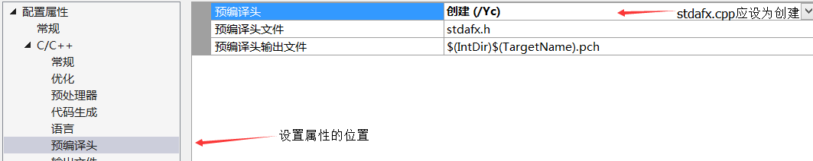

在 Visual Studio 中，新生成的C++项目文件的的头文件夹下会默认有头文件stdafx.h，而源文件夹下则默认有源文件stdafx.cpp，手动将这些文件删除后，编译时系统还会报错。下面总结关于头文件stdafx.h的信息。
使用预编译头
为了提高编译速度
stdafx.h并不是标准C++头文件，也就是说，该文件本质上相当于自定义的一个头文件( 这里是VS默认自定义的文件)，与项目的源代码文件存放在同一个文件文件夹下，通过#include”stdafx.h”引用；
从内容上来说，头文件stdafx.h中可以包含
1.标准系统包含文件
2.经常使用的但不常更改的特定于项目的包含文件
标准系统包含文件 : 即常用的与C标准库对应的头文件，如标准输入头文件stdio.h、字符串头文件string.h等文件。
自定义的包含文件 : 即用户根据项目需要自定义的头文件。
在使用头文件 stdafx.h 时，将所有源程序中所需的包含文件( .h 文件 )都包含在头文件stdafx.h中，具体的做法就是将原本各个文件中所需要的类似于#include<stdio.h>的头文件包含语句都存放在头文件stdfax.h中，之后各个单独的文件中不需要再对存在于stdafx.h中的头文件进行单独声明，而只需要包含有头文件stdafx.h即可。
#include"stdafx.h" //通过该语句包含头文件stdafx.h，该语句需放在每个源文件文件的开头，否则会报错
同时，stdafx.h也可以存放内容改动较少的自定义的头文件。
相应的，源文件stdafx.cpp中内容仅包含以下语句
#include "stdafx.h" //事实上，stdfax.cpp只用于编译头文件stdafx.h中包含的所有内容
事实上，stdafx.cpp只用于编译头文件stdafx.h中包含的所有内容。
开启/关闭预编译头
选中目标项目，右键 -> 属性 -> C/C++ -> 预编译头，在右侧的选项中可以修改预编译头的相关设置。
1.可以修改选项为使用/不使用预编译头，从而开启/关闭预编译头机制；
2.可以修改预编译头文件的名字(预编译头是一种机制，具体的头文件名是可以自行指定的)；
3.修改预编译头输出文件的路径；
实际上，每个单独的源文件中均存在关于预编译头的属性，用于指定不同的编译策略，可供使用者自行选择。特别的，源文件stdafx.cpp的预编译头属性栏应设置为 创建(/Yc)，这样设置表示预编译头是由该源文件生成，而被其他文件使用。

预编译头的原理
在标准头文件中，往往包含有大量的函数声明、宏定义等方面的内容。一方面，原始预处理过程会将实际头文件的内容复制到源程序中，这给编译过程增加很大的开销；另一方面，多个不同的单独的源文件可能会重复声明头文件的包含关系来满足传统的函数声明的要求，这也给编译器带来了重复劳动。另外，当文件发生修改时，整个文件需要重新编译，而作为文件中内容不会更改的头文件的内容也需要重新编译，造成不必要的开销。为了降低在编译过程中诸如此类不必要的开销，引入了预编译头的机制。
在编译过程中，stdafx.cpp和stdafx.h文件用于生成一个预编译头文件 project.pch和预编译类型文件stdafx.obj。
如前面提到的，stdafx.cpp存放的是#include “stdafx.h”。在第一次编译过程中，stdafx.cpp首先被编译处理，将头文件stdafx.h中包含的所有的头文件进行预编译，从而生成一个预编译头文件project.pch，在之后的编译过程中，只要stdafx.h没有被修改(时间戳没有发生改变)，则编译器可以直接使用预编译头文件project.pch的内容，而不需要重新编译stdafx.h。之后的每个包含有stdafx.h头文件的独立文件编译过程都会使用该pch文件中的内容，即一次集中编译头文件后，之后可重复使用。
实际上，生成预编译头文件同样是耗时的，但是在后续的修改编译过程中，只要没有修改stdafx.h和stdafx.cpp文件的内容，就不需要重新生成预编译头文件，也就避免了许多头文件处理的过程，从而大大减少了传统重复处理头文件的开销。相应的，由于预编译头文件包含有众多头文件的处理信息，故而其本身会占用较大的存储空间，故而可以注意清理不需要的预编译头。
一般来说，将被项目中多个独立文件引用的标准头文件和特定项目中一般不做修改的头文件放在stdafx.h中可以大大提升程序编译时的效率。
关于报错
在使用预编译头机制时，可能会遇到一些问题
1. 无法打开预编译头文件”xxx.pch”:no such file or directory 的问题
分析：根据上面的原理解释，可能是由于编译器无法通过stdafx.cpp创建一个预编译文件，从而其他文件没有办法去引用该pch文件。
解决方案：选中源文件stdafx.cpp，右键 -> 属性 -> C/C++ -> 预编译头，出现上述问题一般是由于预编译头的选项从 创建 变为了 使用 ，通过将选项重新改为创建可解决问题。
2. 在查找预编译头文件时遇到意外的文件结尾
需要将指令#include”stdafx.h” 放在每个文件的开始位置，以供处理。
参考：
https://www.cnblogs.com/yhjoker/p/8110684.html
https://docs.microsoft.com/zh-cn/cpp/build/creating-precompiled-header-files?view=msvc-160